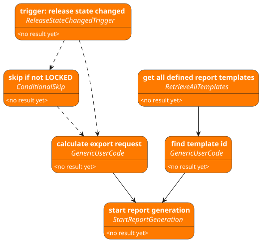

* Concept * Bundle-content * flow_definition.py * How to use .add_block_with() * Example code * main.py * flow_kit * core * library * tools * interpreter * site-packages * examples * Sample flow * test.guide blocks * User specific blocks * Instructions for integrating the flow in test.guide * Initial setup of workflow automation runners * Implementation and trigger configuration of a workflow * Navigation in test.guide * Flow tasks * Event filter in flow triggers * Environment variables * IDE-setup for flow implementation * Visual Studio Code (.vscode) * PyCharm (.idea)
The flow.kit enables test.guide users to define workflow automations in a user-friendly way. For this purpose, it provides generic flow blocks that implement atomic functions. These blocks can be parametrized and linked with each other according to the requirements of the flow to be automated.
Once a flow has been implemented with the flow.kit, it is loaded to test.guide and linked to an event type. For each occurring event of the linked type a flow task is created, which runs the flow defined with the flow.kit on one of the test resources of test.guide. This means that workflow automation with the flow.kit does not require any additional infrastructure but can be executed directly on the existing test resources/testbenches of test.guide.
The flow.kit-bundle is a self-contained zip-file.
The following sections describe the contents of the individual folders.
This file defines a get_flow()-function that returns a flow_kit.Flow object,
which is the specific flow implementation.
For better usability the flow_kit.FlowBuilder
should be used to define the flow. The flow should be defined by adding multiple configured flow blocks
using the .add_block_with() method of the FlowBuilder.
from flow_kit import Flow, FlowBuilder
def get_flow() -> Flow:
"""Define the flow to be executed."""
return (
FlowBuilder()
.add_block_with([.....])
.add_block_with([.....])
[.....]
.build()
With the method .add_block_with(block, *parameter_assignments, required_blocks=, result_alias=) of a FlowBuilder
object a block can be added and fully configured.
First parameter is the new block itself.
:=) here to store the block in a variable.
So the block can be used as input or dependency for other blocks..with_label(label) can be used on every block object.All other positional parameters are treated as assignments to the block parameters:
Assign(parameter_key).to_static_value(value) sets a fixed value to the parameter with given parameter_key.Assign(parameter_key).to_block_result(result_block) links a result of a block to the parameter with given
parameter_key.
Assign(parameter_key).to_user_expression(expression) enables the user to define any python expression.
result_alias are available as identifier for this expression.parameter_key should be given as the corresponding constant in the class of the block.The keyword parameter result_alias= must be set,
if the result of the block should be used in the python expression inside a Assign(...).to_user_expression(...).
The keyword parameter required_blocks= can be set to define blocks that have to be executes earlier.
from pathlib import PurePath
from flow_kit import (
Flow,
FlowBuilder,
Assign,
)
def get_flow() -> Flow:
"""Define the flow to be executed."""
return (
FlowBuilder()
# Block that will be used in Assign(...).to_block_result(...)
.add_block_with(
block_a := BlockA().with_label('Block whose result is used directly.'),
# variable block_a is needed later to link this block in a Assign(...).to_block_result(...)
[...],
)
# Block that will be used in Assign(...).to_user_expression(...)
.add_block_with(
block_b := BlockB().with_label('Block whose result will be adjusted'),
# variable block_b is needed later to link this block as required
[...],
result_alias='block_b_alias',
# result_alias must be set here, because result of this block will be used
# in a Python expression in Assign(...).to_user_expression(...).
)
# Block that has 3 parameters to show usage of parameter assignments with Assign.
.add_block_with(
BlockC().with_label('Block to show usage of parameter assignments.'),
Assign(
BlockC.PAR__A) # parameter key should be given as the corresponding constant in the class of the block.
.to_static_value(
PurePath('C:\\temp') # value is directly given as python object.
),
Assign(
BlockC.PAR__B) # parameter key should be given as the corresponding constant in the class of the block.
.to_block_result(
block_a # block whose result is to be used
),
Assign(
BlockC.PAR__C) # parameter key should be given as the corresponding constant in the class of the block.
.to_user_expression(
'str(block_b_alias.get_id())'
# expression as str which may use all defined aliases and python builtins.
),
required_blocks=[
# block_a, # this is optional because Assign(...).to_block_result(...) already adds block_a
block_b,
# this is mandatory because alias of block_b is used in a Python expression inside an Assign(...).to_user_expression()
],
)
.build()
)
WARNING: This file must not be modified!
This file will be called when executing the defined flow. It accepts 3 arguments:
--validate will perform a static validation of the flow.--execute will execute the flow.--visualize will create a _Workflow.puml_ file in your working
directory, which contains a graphical representation of the described workflow.NOTE: For local test runs, it must be ensured that the required environment variables are provided. These are
TRIGGER_PAYLOAD,TEST_GUIDE_AUTH_KEY,TEST_GUIDE_PROJECT_ID,TEST_GUIDE_URL,TT_RUN_IN_FLOW_AUTOMATIONand others that are required by the specific flow.
WARNING:
--visualizeis still under development and does not support all features.
This directory is a python module, containing the generic implementations of the flow.kit.
WARNING: This directory must not be modified!
This directory contains core functions of the flow blocks and the flow.
This directory contains all blocks that can be used to define the flow. Refer to builtin_blocks_documentation.html for documentation of all blocks.
This directory contains additional functionality needed by core or library.
This directory contains a portable python 3.12 interpreter for windows.
This directory contains the python site-packages needed by the generic flow.kit implementation.
This directory contains example flow definitions with detailed description.
This bundle is delivered with a sample flow definition:
The automation task is: Start a PDF report generation, whenever a release is locked. To do this, this flow must be linked to a ReleaseStateChangedEvent in a flow trigger in test.guide.
The following figure shows the structure of the example flow. Solid links between blocks represent a data flow. Dashed links represent a dependency without data flow. First line of text in a block is a user-friendly description of what the block does in this flow. Second line of text in a block is the python class name of the block.

The flow.kit provides a set of blocks for interaction with test.guide. The test.guide server, which should be addressed, and authentication key can be customized by using the TGInit block. If no custom configuration is set, the default configuration is used. * Default values: * test.guide url in ResourceAdapter configuration * test.guide project id in ResourceAdapter configuration * test.guide authentication key of flow trigger user
For complex logic or special services that are not provided by the BuiltIn blocks,
user code blocks can be implemented.
For this purpose, the flow_kit.library.user_code.GenericUserCode block is available.
A Python function is passed to this in the constructor, from which the parameter and result definitions are automatically determined. The Python function must be fully typed for this.
from flow_kit import Assign, Flow, FlowBuilder
from flow_kit.library.user_code import GenericUserCode
def get_item_count(item_list: list[str]) -> int:
return len(item_list)
def get_flow() -> Flow:
"""Define the flow to be executed."""
return (
FlowBuilder()
.add_block_with(
# Initialize GenericUserCode-Block
GenericUserCode(get_item_count),
# argument is the function itself, so no brackets are allowed
# add parameter assignments
Assign('item_list').to_static_value(['a', 'b', 'c']),
# key of the parameter 'item_list' is the parameter name equals the argument name of get_item_count()
)
.build()
)
User code that uses the ecu.test ObjectAPI can be implemented directly with
the flow_kit.library.ecu_test.ObjectApiUserCode block.
The implemented function must have an api parameter that does not require typing or parameter assignment.
The api-parameter will hold a ApiClient-object of the objectApi.
from pathlib import PurePath
from flow_kit import Assign, Flow, FlowBuilder
from flow_kit.library.ecu_test import ObjectApiUserCode
def do_things_with_object_api(api, name: str) -> PurePath:
package = api.PackageApi.CreatePackage()
package.Save(name + '.pkg')
return PurePath(package.GetFilename())
def get_flow() -> Flow:
"""Define the flow to be executed."""
return (
FlowBuilder()
.add_block_with(
ObjectApiUserCode(do_things_with_object_api),
Assign('name').to_static_value('package_name'),
)
.build()
)
resourceAdapter.config file
plugin.de.tracetronic.ttstm.monitoring.plugin.flowAutomation.FlowAutomationPlugin.1.config.enabled=true
plugin.de.tracetronic.ttstm.monitoring.plugin.flowAutomation.FlowAutomationPlugin.1.config.polling=60000
plugin.de.tracetronic.ttstm.monitoring.plugin.flowAutomation.FlowAutomationPlugin.1.config.resourceLocationId=${resourceLocationId}
flow_definition.py in the zip-file.Sidebar navigation in test.guide for flow related pages can be enabled by setting the feature flag:
SHOW_FLOW_PREVIEW_IN_NAVIGATION=true in the features.properties file of your test.guide server.
Alternatively the following entry points are available:
Entrypoint: (your test.guide url)/flow/tasks
Flow tasks introduce a dedicated place for flow executions. You have access to the overview and detail pages for flow tasks. After the execution you can see a dedicated report for your flow execution on the detail page of the flow task.
Event filters can be used to narrow down on which events, you want to execute your flow, even before a flow task was created. Such event filters can be configured for some event types by specifying filter items. All specified filter items are linked by an AND relation.
If you miss a filter item on some event type, please let us know.
Entrypoint: (your test.guide url)/flow/envvariables
In this configuration page you can set up environment variables, which are available to all flow tasks of this project as environment variable during flow execution.
In order to not leak the set variables these are
For the best support when implementing the flows, we recommend using an IDE to be able to use features such as syntax highlighting and auto-completion.
The bundle contains configuration files for Visual Studio Code in folder .vscode.
After opening the bundle directory in Visual Studio Code everything should be setup.
Run configurations for validation, visualization (experimental) and execution of the flow via main.py are also set
up.
NOTE: For flow execution the Environment variables used by the flow must be setup by the user in the Visual Studio Code run configuration.
The bundle contains configuration files for PyCharm in folder .idea.
After opening the bundle directory in PyCharm, only the interpreter needs to be set up once.
NOTE: In PyCharm the project interpreter must be set manually.
File > Settings > Project: flow-kit-[...] > Python Interpreter > Add Interpreter > Add Local Interpreter ... > System Interpreter > [select python.exe from interpreter folder of the bundle]
Run configurations for validation, visualization (experimental) and execution of the flow via main.py are also set
up.
NOTE: For flow execution the Environment variables used by the flow must be setup by the user in the PyCharm run configuration.
We recommend the Plugin pydantic for PyCharm. This will help with implementing user functions as tg-api-clients library is built on pydantic models.
NOTE: If you encounter issues, when trying to debug the flow.kit in the IDE:
There is a known issue in newer PyCharm version: JetBrains Issue Tracker. The linked issue also has a workaround. Please be advised: Use the workaround on your own risk. We don't take liability for anything breaking using the workaround.
When PyCharm is initially opened in the bundle folder, a prompt appears asking you to install the required plugins:: * pydantic * Helps with working on Pydantic models, which are used in the tg-api-clients library. * Live Templates Sharing * Integrates the delivered Live Templates from the bundle into your IDE. * PlantUML integration * Renders the output of the visualize run configuration.